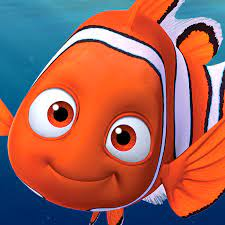

Mufasa nasceu o primeiro filho de Ahadi e Uru na Pedra do Rei, o irmão mais velho de Askari, e como herdeiro do trono da Pedra do Rei, enquanto seu irmão mais novo serviu como líder da Guarda do Leão. Quando os dois eram adolescentes, Askari retornou a Pedra do Rei após uma patrulha solo
 nspirações. Woody foi inspirado pelo brinquedo favorito do produtor executivo John Lasseter, um boneco puxa-corda que fala. A Pixar e o diretor Bud Luckey desenhou o personagem e surgiu a ideia de fazer dele um cowboy.
nspirações. Woody foi inspirado pelo brinquedo favorito do produtor executivo John Lasseter, um boneco puxa-corda que fala. A Pixar e o diretor Bud Luckey desenhou o personagem e surgiu a ideia de fazer dele um cowboy.
 Nemo é um pequeno e simpático peixe-palhaço, que repentinamente é sequestrado do coral onde vive por um mergulhador e passa a viver em um aquário. Longe de seu pai, que tanto o advertiu quanto aos perigos dos mares, Nemo constrói laços de amizade com seus companheiros de cativeiro.
 brum urso pardo domesticado, que vive na pacata cidade de Timberline. Ele é a grande estrela dos shows ecológicos de sua cidade, sendo que à noite desfruta das acomodações da garagem de Beth.uma guarda florestal que o criou desde que era filhote. Porém nem todos gostam de Boog.
brum urso pardo domesticado, que vive na pacata cidade de Timberline. Ele é a grande estrela dos shows ecológicos de sua cidade, sendo que à noite desfruta das acomodações da garagem de Beth.uma guarda florestal que o criou desde que era filhote. Porém nem todos gostam de Boog.

O Shrek original vive no pântano com seus pais. Ao atingir a maioridade, os pais decidem que é hora do ogro tomar um rumo na vida – e o expulsam de casa. Em sua caminhada, ele encontra uma bruxa que prediz seu futuro: Shrek irá encontrar um burro e, juntos, irão até um castelo salvar uma princesa

Sulley tem um talento especial para assustar sempre em concorrência com seu rival de trabalho Randall Boggs. O sucesso do primeiro filme permitiu a Pixar para fazer uma prequela, Universidade Monstros, que mostra Sulley como um estudante preguiçoso e arrogante se tornando rival e depois melhor amigo de Mike
Quanto ao desenvolvimento da história, a trama fala de Ben (um boi, mas com tetas de vaca, coisa meio estranha), líder dos animais de uma fazenda que tem sérias dificuldades em educar seu filho Otis (outro boi com tetas de vaca), um adolescente irresponsável que só pensa em se divertir

Maui é um ser humano, que foi abandonado por seus pais e criado pelos deuses. Devido a isto, ele acaba tendo que dividir sua vida entre os deuses e os humanos. Maui segue uma jornada com Moana, princesa da tribo Tui, para encontrar respostas sobre seu antepassado.
Vegeta surge na série como o orgulhoso príncipe da raça Saiyajin. Ele visita a Terra com seu tutor Nappa com o intuito de utilizar as Esferas do Dragão para desejar a imortalidade. Ambos partiram para a Terra, quando souberam da derrota de Raditz e chegaram ao planeta após um ano.
Roronoa Zoro, também conhecido como O Caçador de Piratas, é um pirata e ex-Caçador de Recompensas, e também um espadachim que usa 3 espadas. Ele foi o primeiro membro a se juntar aos Piratas do Chapéu de Palha

ThunderCats conta as aventuras de um grupo de felinos sobreviventes do planeta Thundera. O primeiro episódio da série começa com a destruição de Thundera, forçando os ThunderCats (uma espécie de nobreza Thunderiana) a fugir de seu planeta natal.
um garoto tímido que ama todos os tipos de jogos, mas muitas vezes é intimidado ao seu redor. Um dia, ele ganha peças fragmentadas de um antigo artefato egípcio, o Enigma do Milênio Millennium Puzzle